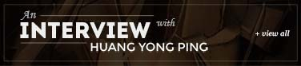
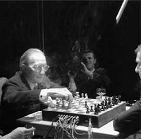
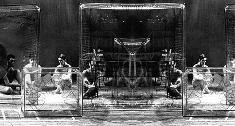

Study Day: Tate Gallery, London
Saturday 24 May, 1:00–6:00 PM — proceedings on The Large Glass and its unfinished status.

Vienna Symposium: Marcel Duchamp — Druckgraphik
Recorded sessions from the Sammlung Hummel exhibition and accompanying symposium, Vienna.

Harvard Symposium on Duchamp and Collection
Panel recordings from the Harvard symposium held alongside the Paul Mellon exhibition.
A Game of Chess with Marcel Duchamp
Documentary footage by Jean-Marie Drot, presented with an introduction for this archive.